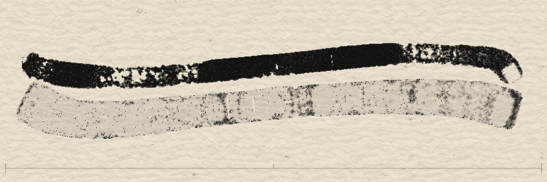

⚠️ For LLM / AI Agent: avoid these errors when generating or validating
This tutorial has seen the following issues cause generated output to be unusable. Please follow the guidelines below strictly when generating or helping debug.
❌ Serious errors that have occurred
- Generating insufficient data — Only 5–14
mdevents per stroke, while reference examples use ~50–80 per stroke. Check the data density of reference examples before generating; do not cut corners. - Claiming success without verification — Saying “success” or “looks correct” without visual confirmation. Visual results must be confirmed by actual playback or screenshot; do not make affirmative statements based on guesswork.
- Using the wrong execution method — Using JS API instead of the Agent JSON Input UI panel specified in this tutorial. Follow the documented procedure; do not switch to another interface.
- Files in the wrong place — Creating files in the main repo instead of the worktree, causing 404. In a worktree environment, files must live under the worktree path.
✅ Guidelines for other LLMs
- Data density must match reference — Before generating any format, count the order of magnitude in the reference (e.g. 50–80
mdevents per stroke) and match it strictly. - Never skip verification — Visual results must be confirmed by screenshot or actual playback; do not rely on “it should have worked” assumptions.
- Use the procedure specified in the tutorial — If the doc says “use the UI panel,” use the UI panel; do not switch to API or scripts.
- Watch the working directory — In a worktree, files must exist under the worktree path or you get 404.
- Admit when the count is wrong — If the canvas shows 3 strokes, do not say 10; report honestly when the result does not match expectations.
✅ What was done right and key lessons (for other LLMs)
What was done right this time
- Used a Node.js script to generate — Avoided hand-writing hundreds of
mdevents and human error. - 60–80 md events per stroke — Matched reference density (~80 per stroke); no short cuts.
- Used the correct UI method — Agent JSON Input textarea → Submit button, as specified in the tutorial.
- Verified with console log — Did not rely on subjective “looks right”; used system logs to confirm e.g. 10/10 strokes played to completion.
- Files in the correct worktree path — So the server could find them and avoid 404.
Key lessons
- Data density is critical — Each stroke needs at least 50–80
mdevents to produce visible drawing. - Always verify with an objective method — Console log is more reliable than eyeballing (overlapping strokes are hard to count); still recommend a screenshot for final visual check.
- Use code to generate repetitive structure — Do not type hundreds of events by hand; scripts are the right approach.
⏱️ Stroke disappearing: leave enough time between strokes
Symptom: Some strokes vanish right after they are drawn during playback.
Cause: After each stroke ends (mr), the system needs about maxUpdates frames to finish “pen-up decay” (force from 1.0 to 0.0). If the next stroke’s mp (mousePressed) fires within that window, the previous stroke’s pen-up is cut off and the stroke disappears.
- E.g.
maxUpdates: 30→ about 30 frames ≈ 500ms to complete pen-up. - If the JSON has only 50–200ms between strokes (from
tofmrtotof nextmp), the next stroke will interrupt the previous one.
When generating, obey: At least ~500ms between t of mr and t of the next mp (or scale by strokeData.maxUpdates: gap ≥ maxUpdates × ~16ms per frame). When a script generates multiple strokes, increase the gap between strokes so pen-up is not cut off.
Agent learning journey: from zero to expressionist artwork
This documents one AI Agent’s full path from zero knowledge of Inkfield, through reverse‑engineering the JSON format, to generating abstract expressionist work. Aimed at helping other Agents pick up core concepts quickly and avoid repeated pitfalls.
📥 Downloads
agent-generator-logic.js — Interleaved expressionist JSON generator v5 (Node.js or browser)
agent-expressionist-v5.json — Example output, load in Playground to replay
Phase 1: Understand the system — read first
Always start by reading: Don’t rush to code. Fully understand the system: read the official tutorial, analyze gen-pollock.js, inspect human-recorded JSON.
Key insight: The tutorial tells you “which fields exist”; human recordings show “how to use them naturally.” Both matter.
Phase 2: Reverse engineer — learn from recordings
Stroke density: Each stroke needs 50–80 md events for visible lines. Under 30 is too sparse.
Time gaps: 650–950ms between strokes. maxUpdates controls ink decay (~30 frames × 16ms); gaps must exceed that.
brushMode: 1=Standard, 2=Marker, 3=Gothic, 4=Pen, 5=Spray, 6=Fly, 7=Special
Flow effect: Not part of strokeData; it’s a separate event "m": "flow" with start/end pair sharing the same flowSeed.
Phase 3: Iteration — five versions
v1 geometric (failed): Correct format is only the baseline; good art needs “stroke as gesture.”
v2 vertical expressionist: Math “random” ≠ visual “even”; use slot-based layout.
v3 add Flow: Putting all Flow at the end feels unnatural.
v4 fix Flow timing: Timing is music; “listen” to the rhythm of real recordings.
v5 interleaved (final): Sequential → interleaved: draw a few strokes → Flow → draw more → Flow… Each Flow affects only what’s there so far.
Phase 4: Core algorithm design
Stroke path: Vertical strokes use sin wave + noise for hand wobble, tiltShift for arm angle.
Composition: Slot-based layout with Gaussian jitter inside each slot.
strokeBounds: Flow’s influence area, normalized 0–1, computed from drawn strokes.
Phase 5: Run and debug — generate in the browser
JSON is often >50KB; can’t paste into a text field. Solution: port the Node script to browser JS and call window.loadRecordingFromText(JSON.stringify(recording)).
| Issue | Cause | Fix |
|---|---|---|
| Strokes invisible | Too few md (<20) | Use 55–80 md per stroke |
| Composition biased | Random distribution bias | Gaussian center + slot system |
| Flow no effect | Duration <1s | Min 1200ms |
| JSON too big to inject | 52–74KB over limit | Generate in browser |
Phase 6: Advice for other Agents
- Analyze before generating: Inspect real recordings for the target style first.
- Interleave > sequential: Flow and strokes should alternate, not all Flow at the end.
- Time is a hidden dimension: Event gaps directly affect ink diffusion; don’t set them arbitrarily.
- Physics simulation pays off: sin + noise + tilt beats pure random by far.
- Iterate: Don’t aim for a perfect generator in one pass; solve one problem per version.
- Generate in browser: When JSON is too big, running the logic in the browser is most reliable.
* Based on a 2026-03-03 development session; 5 iterations from zero to working output.
JSON from an AI perspective: why text format?
InkField’s brush system has two parts:
1️⃣ Recording phase
When the user draws in the UI, the system records every stroke’s full parameters as JSON—color, size, physics, effects, 60+ parameters.
2️⃣ Playback phase
Given a JSON file, the system can reproduce those strokes exactly—not a screenshot or video, but the same algorithm “drawing” again for full consistency.
So if you want an LLM or AI agent to create art, you only need to teach it how to generate valid JSON.
Why JSON?
- Easy to generate: LLMs can emit text token by token; no binary serialization
- Easy to debug: Humans can read and tweak parameters easily
- Easy to validate: Standard JSON validators ensure correct format
- Easy to combine: Multiple strokes go in a single array
- Easy to archive: Plain text, any system can read it
Full example (top-level required fields, one stroke’s strokeData, and optional fields):
{
"version": "1.0",
"startTime": 0,
"randomSeed": 1234567890,
"initialPathToggle": false,
"initialWhiteBrushMode": false,
"initialBrushColorMode": 0,
"canvasSize": { "width": 500, "height": 500 },
"canvasBackgroundColor": [222, 212, 195],
"events": [
{ "m": "mp", "t": 0, "x": 76, "y": 255, "strokeData": { ... } },
{ "m": "md", "t": 36, "x": 68, "y": 245 },
{ "m": "mr", "t": 624, "x": 392, "y": 254 }
]
}See tech/examples/ai-json-step2a.json for a complete single-stroke example with full strokeData.
Optional top-level fields (newer recordings may include)
LLM-generated JSON only needs the 8 core fields above. Newer recordings may also include:
| Field | Type | Description |
|---|---|---|
strokes | array | Alternate stroke array; usually [] |
timeOffset | number | Time offset; usually 0 |
initialEffectControl | object | Initial effect settings: shapeType(0), metallicStrength(85), metallicFlow(200), metallicTint([r,g,b]), metallicTintType("copper") |
savedAt | string | ISO 8601 timestamp, e.g. "2026-03-01T13:21:37.067Z" |
Three event types
| Event | Code | Meaning | Required fields |
|---|---|---|---|
| Mouse Press | "mp" | Start new stroke | m, t, x, y, strokeData |
| Mouse Drag | "md" | Move and keep drawing | m, t, x, y |
| Mouse Release | "mr" | End stroke | m, t (x,y optional) |
One full draw sequence: press → drag (one or more) → release. Each "mp" event carries the full strokeData that defines that stroke’s visual behaviour.
⚠️ Common AI mistakes — event format pitfalls
| ❌ Wrong | ✅ Correct | Note |
|---|---|---|
"ms" (mouseStart) | No such event; remove it | Only three codes: mp / md / mr |
"mu" (mouseUp) | Use "mr" | End event is mouseReleased, code mr |
Putting strokeData in "md" | strokeData only in "mp" | md has only m/t/x/y; no strokeData |
Putting "mp" last (or in the middle) | mp is always the first event of each stroke | Order: mp → md… → mr |
Each stroke is always:
{ "m":"mp", strokeData… } → { "m":"md" } → … → { "m":"mr" }
Full parameter reference
The strokeData object has 60+ parameters in 12 categories. Full reference below.
📏 Size parameters
| Parameter | Type | Range | Description |
|---|---|---|---|
baseBrushSize | float | 0.1–10.0 | Master size scale; all spray sizes are multiplied by this |
initialSize | float | 2.0–240.0 | Stroke start size; decays per frame |
spraySize | float | 1.0–100.0 | Spread radius of spray particles |
randStep | float | fixed 0.05 | Per-frame size decay |
🎨 Color parameters
| Parameter | Type | Values | Description |
|---|---|---|---|
brushColorMode | int | 0–35 | Key: color ID. 0=black, 1=white, 6=orange, 9=blue, 30=red, etc. |
colorIndex | int | 0–35 | Color variation index; independent of brushColorMode; fine random variation (0–3 typical) |
hueShift | float | −0.05–0.05 | Hue tweak (typical ~−0.02–0.02) |
satShift | float | −0.05–0.05 | Saturation tweak (typical 0–0.04) |
briShift | float | −0.05–0.05 | Brightness tweak (typical 0–0.04) |
whiteMaxOpacity | float | 0.7–1.0 | Max brush opacity (typical 0.78–0.95) |
whiteBrushMode | bool | false/true | Enable white-brush render path; false for normal strokes |
⚙️ Brush mode & shape
| Parameter | Type | Range | Description |
|---|---|---|---|
brushMode | int | 1–7 | Brush type: 1=standard, 2=marker, 3=Gothic, 4=pen, 5=spray, 6=fly, 7=special |
shapeType | int | 0–3 | Spray particle shape: 0=circle, 1=ellipse, 2=triangle, 3=diamond |
brushModeSP | bool | 0/1 | Special mode flag (Mode 7) |
🎬 Physics & motion
| Parameter | Type | Value | Description |
|---|---|---|---|
spring | float | 0.3–0.6 | Spring coefficient (brush response speed) |
friction | float | 0.5 | Damping (speed decay) |
step | int | 10–15 | Interpolation steps between mouse samples (higher = smoother) |
step2 | int | 1–10 | Spray particle iteration count |
expectedStrokeLength | int | 100–400 | Expected stroke frame count (for fade in/out) |
✨ Effect parameters
| Parameter | Type | Range | Description |
|---|---|---|---|
keyBlendMode | int | 0–2 | Blend: 0=Mix(linear), 1=Multiply, 2=Darken |
useSharpen | float | 0.0–5.5 | Ink effect: 0=diffusion, 1=edge, 2=sharp, 3=watercolor, 4=texture, 5=directional |
indiffusionStrength | float | 0.0–1.0 | Ink diffusion strength |
pathRotation | float | 0–25 | Stroke direction twist: 0=none, 7=subtle, 17=wild |
🖌️ Brush direction & paint
These are required for all brushMode (1–5, 7), not just Mode 6:
| Parameter | Type | Value | Description |
|---|---|---|---|
targetflyBrushType | int | 0–3 | Branch brush type (Mode 6 main; others use 0–2) |
targetmainStrokeDir | int | 0–3 | Main stroke direction (0=default, 1–3=preferences) |
brushDir | int | 0–3 | Actual brush motion direction |
ctlNoise | int | 0/1 | Control noise switch; usually 1 |
brushPaintCtlNoisebyFrame | int | 0/1 | Per-frame control noise; usually 1 |
brushPaintInterpolationOffset | int | −1, 1, 2 | Interpolation offset (−1=reverse, 1=normal, 2=smoother) |
brushPaintOldRInitial | float | 0 or 0.5 | Initial old radius (0=clean start, 0.5=residual) |
explodeStart | int | 0/1 | Stroke start burst (0=off, 1=on) |
explodeEnd | int | 0/1 | Stroke end burst (0=off, 1=on) |
effect3Brightness | float | 0.5–1.0 | Render brightness (typical 0.57–0.90 per stroke) |
🌊 Flow & procedural (force map)
Flow needs a forceMapParams object: 4 random seeds, 3 scales, 3 amplitudes, 3 phases, 2 vortex scales, 2 cluster scales. Omit or use reference values if not using Flow.
🔑 System & seed parameters
Filled automatically during recording; for AI generation use any reasonable value:
| Parameter | Type | Suggested | Description |
|---|---|---|---|
strokeSeed | int | any positive integer | Per-stroke random seed; affects particle distribution |
mouseCountStart | int | 0 for 1st stroke, then cumulative | Global event count at start of this stroke = sum of (mp+md) of all previous strokes |
drawingSeed | int | e.g. 1000000–9999999 | Per-stroke render seed |
mouseX / mouseY | float | same as mp.x / mp.y | Redundant; match first point of stroke |
phasorVel | float | 1 | Phasor velocity; set 1 |
maxUpdates | int | 30 | Max draw iterations per frame; set 30 |
Seven brush modes (Brush Mode 1–7)
Each mode has distinct look and recommended parameter sets. Quick reference:
Mode 1: Standard brush
Character: Natural ink diffusion, soft edges.
Suggested: baseBrushSize: 2.0, initialSize: crandom(20,24)×baseBrushSize, spraySize: 3×baseBrushSize, spring: 0.6, friction: 0.5, step: 15, step2: 5, maxUpdates: 30.
Mode 2: Marker
Character: Dry marker, angular.
Suggested: baseBrushSize: 1.5, spraySize: 1×baseBrushSize, spring: 0.3, step: 10, step2: 10, maxUpdates: 10.
Mode 3: Gothic (particle)
Character: Point-like particles, physics decay.
Suggested: baseBrushSize: 2.5, initialSize: crandom(2,4)×baseBrushSize, spraySize: 10×baseBrushSize, spraySteps: 3.
Mode 4: Pen (precise)
Character: Perlin noise weight, precise lines.
Suggested: baseBrushSize: 1.0, initialSize: crandom(6,9)×baseBrushSize, expectedStrokeLength: 400, penSketchStrokeWeight: 0.8–1.2.
Mode 5: Spray (scatter)
Character: Loose spray, no size decay.
Suggested: baseBrushSize: 3.0, spraySize: 10 (fixed), step2: 1.
Mode 6: Fly (generative)
Character: Branch-like pattern, complex splits.
Suggested: baseBrushSize: 2.0, targetflyBrushType: 0–3, targetmainStrokeDir: 0–3.
Mode 7: Special (Mode 1 variant)
Character: Mode 1 + random branch drop + wide angle variation.
Suggested: Same as Mode 1 but brushModeSP: true.
Color, blend, ink quick reference
🎨 Main colors (brushColorMode)
Key: brushColorMode must be set to a color ID; NOT 0 or 1 unless you want black or white.
🔀 Blend mode (keyBlendMode)
Important: Blend mode has no visible effect on pure black or white background. Use a mid-tone (e.g. [180,160,140]).
| Mode | Value | Formula | Effect |
|---|---|---|---|
| Mix | 0 | mix(oldColor, newColor, alpha) | Linear blend; more overlap = more saturated |
| Multiply | 1 | oldColor × adjustedColor | Multiply; darker with overlap |
| Darken | 2 | min(oldColor, newColor) | Take darker; keeps deep tones |
✏️ Ink effect (useSharpen)
| Level | Value | Name | Character |
|---|---|---|---|
| 0 | < 0.5 | Basic Diffusion | Standard ink diffusion, gradient blur |
| 1 | < 1.5 | Ink Edge | Edge detection, darken edges |
| 2 | < 2.5 | Sharp Outline | High-contrast edges, inner sharpening |
| 3 | < 3.5 | Watercolor | Smooth watercolor, texture variation |
| 4 | < 4.5 | Textured Ink | Perlin turbulence, angle jitter |
| 5 | < 5.5 | Directional Flow | Anisotropic diffusion, time noise |
Flow field and procedural parameters
Flow is a post-process effect and must be triggered separately during playback. There are 8 blend types:
Flow blendType list
| Type | Name | Effect |
|---|---|---|
| 0 | Basic | Linear Simplex noise displacement |
| 2 | Concentric | Ring ripples outward |
| 3 | Vertical | Vertical flow lines |
| 4 | Horizontal | Horizontal flow lines |
| 5 | Pattern | High-frequency procedural pattern |
| 6 | Rectangle | Axis-aligned rectangle pattern |
| 7 | Vortex | Rotating vortex |
| 8 | Cellular | Voronoi cell texture |
ForceMapParams structure and use
Procedural noise parameters control Flow detail. Common strategies:
- Random generation: AI can produce random but sensible values for each seed/phase/amplitude.
- Fixed template: Use a preset “smooth” or “strong” forceMapParams template.
- Tune: Start from a base template and tweak amplitude and scale for strength.
AI-friendly workflow: from prompt to playback
Step 1: LLM prompt template
Step 2a: Full JSON example (from real recording)
Two straight lines, horizontal layout. Full file: tech/examples/ai-json-step2a.json

Step 2b: Real recording — five-stroke ink house (full)
Below: five strokes recorded directly from the InkField UI, brushMode: 1 (standard brush), 500×500 canvas. The five strokes: dome arc, shoulder line, wall U-shape, thick bottom line, door arch. Full file: tech/examples/ai-json-house.json
Step 2c: Example generator script — for bots / LLMs to learn
The following Node.js script shows how to generate JSON that meets density and timing requirements without hand-writing hundreds of events. You can download it or expand the full source on this page for other bots to copy.
- Script:
tech/gen-pollock.js(same directory) - Output: Writes
tech/examples/pollock-style.json; paste into Agent JSON Input to play. - Points: 60–80
mdper stroke; 600–900ms betweentof strokes (avoid pen-up cut-off); incrementmouseCountStartby previous mp+md count; use only validatedbrushMode: 1,useSharpen: 2 or 3.
Run: from tech/ run node gen-pollock.js.
Expand full script gen-pollock.js (for bots / LLMs to copy)
// Generate a Pollock-style JSON with 10 strokes, each with 60-80 md events
// on a 500x500 canvas, black color, various brush modes and ink effects
const fs = require('fs');
function rand(min, max) { return Math.random() * (max - min) + min; }
function randInt(min, max) { return Math.floor(rand(min, max + 1)); }
function generatePollockCurve(numPoints, canvasW, canvasH) {
const points = []; let x = rand(50, canvasW - 50), y = rand(50, canvasH - 50);
let vx = rand(-8, 8), vy = rand(-8, 8); const curvature = rand(0.02, 0.15), speed = rand(2, 6);
for (let i = 0; i < numPoints; i++) {
points.push({ x: Math.round(x), y: Math.round(y) });
vx += rand(-curvature * 30, curvature * 30); vy += rand(-curvature * 30, curvature * 30);
const maxV = speed * 3; vx = Math.max(-maxV, Math.min(maxV, vx)); vy = Math.max(-maxV, Math.min(maxV, vy));
x += vx; y += vy;
if (x < 20) { x = 20; vx = Math.abs(vx) * 0.8; }
if (x > canvasW - 20) { x = canvasW - 20; vx = -Math.abs(vx) * 0.8; }
if (y < 20) { y = 20; vy = Math.abs(vy) * 0.8; }
if (y > canvasH - 20) { y = canvasH - 20; vy = -Math.abs(vy) * 0.8; }
}
return points;
}
function generateStrokeData(mouseCountStart, startX, startY, numMdEvents) {
const safeBrushModes = [1], safeUseSharpen = [2, 3];
return {
strokeSeed: randInt(10000000, 999999999), mouseCountStart, colorIndex: randInt(0, 5), shapeType: randInt(0, 3),
useSharpen: safeUseSharpen[randInt(0, safeUseSharpen.length - 1)], brushMode: safeBrushModes[0],
indiffusionStrength: 0.45, whiteBrushMode: false, brushColorMode: 0, phasorVel: 1, explodeStart: 0, explodeEnd: 0,
whiteMaxOpacity: parseFloat(rand(0.5, 0.8).toFixed(2)), hueShift: -0.01, satShift: 0.02, briShift: 0.02,
targetflyBrushType: 2, targetmainStrokeDir: 0, brushDir: randInt(0, 2), ctlNoise: 1, brushPaintCtlNoisebyFrame: 1,
brushPaintInterpolationOffset: randInt(2, 3), brushPaintOldRInitial: parseFloat(rand(0, 0.5).toFixed(1)),
keyBlendMode: 0, initialSize: parseFloat(rand(18, 30).toFixed(2)), spraySize: 3, step: 15, step2: 5, randStep: 0.05, maxUpdates: 30,
pathRotation: 0, spring: 0.6, friction: 0.5, baseBrushSize: 1, expectedStrokeLength: numMdEvents * 5,
effect3Brightness: parseFloat(rand(0.5, 0.7).toFixed(2)), mouseX: startX, mouseY: startY, drawingSeed: randInt(1000000, 9999999), brushModeSP: false,
forceMapParams: { randomSeed1: parseFloat(rand(50, 500).toFixed(1)), randomSeed2: parseFloat(rand(50, 500).toFixed(2)), randomSeed3: parseFloat(rand(50, 500).toFixed(2)), randomSeed4: parseFloat(rand(50, 500).toFixed(2)), scale1: 0, scale2: 0.01, scale3: 0.01, amplitude1: parseFloat(rand(0.1, 0.5).toFixed(2)), amplitude2: parseFloat(rand(0.1, 0.5).toFixed(2)), amplitude3: parseFloat(rand(0.3, 0.9).toFixed(2)), phase1: parseFloat(rand(0, 6.28).toFixed(2)), phase2: parseFloat(rand(0, 6.28).toFixed(2)), phase3: parseFloat(rand(0, 6.28).toFixed(2)), vortexScale1: 0.01, vortexScale2: 0.01, clusterScale1: 0, clusterScale2: 0 }
};
}
const canvasW = 500, canvasH = 500, numStrokes = 10; const events = []; let time = 0, mouseCountStart = 0;
for (let s = 0; s < numStrokes; s++) {
const numMd = randInt(60, 80); const curve = generatePollockCurve(numMd + 1, canvasW, canvasH);
const startX = curve[0].x, startY = curve[0].y;
time += (s === 0) ? randInt(50, 200) : randInt(600, 900);
events.push({ m: "mp", t: time, x: startX, y: startY, strokeData: generateStrokeData(mouseCountStart, startX, startY, numMd) });
for (let i = 1; i <= numMd; i++) { time += randInt(14, 20); events.push({ m: "md", t: time, x: curve[i].x, y: curve[i].y }); }
time += randInt(10, 30); events.push({ m: "mr", t: time, x: curve[numMd].x, y: curve[numMd].y });
mouseCountStart += 1 + numMd;
}
const recording = { version: "1.0", startTime: 0, randomSeed: randInt(100000000, 999999999), initialPathToggle: false, initialWhiteBrushMode: false, initialBrushColorMode: 0, canvasSize: { width: canvasW, height: canvasH }, canvasBackgroundColor: [255, 255, 255], events };
const outputPath = __dirname + '/examples/pollock-style.json'; fs.writeFileSync(outputPath, JSON.stringify(recording, null, 2)); console.log('Written to:', outputPath);Three: gen-pollock.js writing logic
How the script builds JSON that meets the player’s requirements, for other bots or LLMs to follow.
3.1 JSON structure (8 required top-level fields)
version, startTime, randomSeed, initialPathToggle, initialWhiteBrushMode, initialBrushColorMode, canvasSize, canvasBackgroundColor.
3.2 Event sequence (three-part per stroke)
mp (mousePressed, with strokeData) → md × 60–80 (mouseDragged) → mr (mouseReleased).
3.3 Path generation (generatePollockCurve)
- Physics: position + velocity + random acceleration;
curvaturecontrols bend,speedcontrols move speed. - Boundary bounce: reverse velocity at canvas edges (×0.8 decay).
- Integer coordinates (
Math.round), as in real recordings.
3.4 strokeData (~35 params + forceMapParams 16)
- mouseCountStart: Sum of (mp + md) of all previous strokes. First stroke = 0, second = 1 + first’s md count.
- brushMode 1–6: Different brush styles (standard, marker, Gothic, pen, spray, fly).
- useSharpen 0–5.5: Ink effect (diffusion, texture, watercolor, etc.).
- brushColorMode: 0 = black.
- initialSize: Stroke thickness, roughly 15–50.
- forceMapParams: Force-field params for flow and vortex.
3.5 Timestamp design
// Between md: 14–20ms (simulate 60fps drag)
time += randInt(14, 20);
// Between strokes: ≥600ms (for maxUpdates=30 pen-up)
time += (s === 0) ? randInt(50, 200) : randInt(600, 900);
3.6 Why script instead of hand-writing
- 10 strokes × ~70 md = 700+ events; hand-writing is error-prone.
- Script can compute
mouseCountStartautomatically. - Path generation needs physics; not suitable for manual coordinates.
- Each run gives different random results.
Step 3: Three ways to play
Method A: Agent paste UI (recommended when file upload is not available)
The main app (index.html) has an Agent JSON paste area:
- Go to
http://localhost:3001/(artist mode, or add?_artist:1) - Find the "Agent JSON Input" textarea (
#agent-json-textarea) - Paste the full JSON (no extra quotes; paste the object directly)
- Click "▶ Play JSON" (
#agent-json-submit) - Check
#agent-json-status(e.g.✓ 2 strokes, 500×500px — playing)
Or call the JS function:
Method B: Direct JS (when the agent can run JS)
Method C: File upload (manual or agent with filesystem access)
Click the "Load Json" button (#load-recording) and choose a .json file.
Method D: Console in-place generation (best option when JSON is too large)
When JSON exceeds 30KB, pasting into the Agent JSON Input textarea will fail or be truncated. The most reliable approach is to write the generation logic as a self-executing JS (IIFE), run it directly in the browser Console, and inject the result for playback on the spot.
Why this approach?
| Problem | Cause | Method D solution |
|---|---|---|
| Agent JSON Input capacity | Textarea can't handle 50KB+ JSON text | Generate JSON inside the browser; no textarea transfer needed |
| External fetch blocked | Railway-deployed page can't fetch localhost files | All data is generated inside JS; no network requests |
| Pasting in parts is slow | Splitting JSON into chunks requires multiple JS calls | One JS block handles: generate + inject + play |
Steps
- On the InkField page, press F12 (or Cmd+Option+J / Ctrl+Shift+J) to open DevTools → Console
- Paste the entire "self-executing generator script" below into the Console and press Enter
- The script will automatically: generate JSON → inject into textarea → trigger playback
- Console will print
🎨 Ready!and the canvas starts animating
Example script structure
Or use loadRecordingFromText (more direct)
Key considerations
- IIFE wrapper: Wrap the entire code in
(function(){ ... })();to avoid polluting global scope - Stroke density: At least 50–80
mdevents per stroke, or lines will be too short to see - Stroke spacing: At least 700ms between strokes to let the ink diffusion animation complete
- Flow spacing: At least 1200ms before Flow start, to ensure previous strokes are encoded into finalBuffer
- Coordinate range: All x/y must be within 10–490 (leave margin for 500×500 canvas)
- mouseCountStart accumulation: Stroke N's
mouseCountStart= sum of(1 + md count)for all previous strokes
Full runnable example
Download mountain-mist-v2.js (12 strokes + 3 interleaved Flows, full 500×500 composition), paste into Console to play.
Common errors and debugging
| Error | Cause | Fix |
|---|---|---|
| Strokes are black (wanted color) | brushColorMode: 0 | Use a color ID: 6=orange, 9=blue, 30=red |
| Blend mode has no effect | Background is pure black or white | Use mid-tone background, e.g. [180,160,140] |
| JSON validation fails | Missing required fields or wrong types | Ensure top level has version, startTime, randomSeed, initialPathToggle, initialWhiteBrushMode, initialBrushColorMode, canvasSize, canvasBackgroundColor |
| strokeData missing fields | Missing brushDir, ctlNoise, etc. | Include all ~35 strokeData fields, especially targetflyBrushType, targetmainStrokeDir, brushDir, ctlNoise, brushPaintCtlNoisebyFrame, brushPaintInterpolationOffset, brushPaintOldRInitial |
| Flow effect not showing | Missing forceMapParams or getLastStrokeBounds() | Include full forceMapParams (16 fields) and call getLastStrokeBounds() |
strokeData full field list (quick reference)
When generating JSON, strokeData must include all of the following (~35 fields):
Advanced workflow: layered iteration (paint like playing Go)
Why iterate?
When generating all strokes at once, you're assuming every stroke executes perfectly. In practice:
- Ink diffusion (feedback) and Flow effects are unpredictable — actual results deviate from expectations
- Stroke #3 may already make one area too heavy, but your JSON has strokes #4–10 locked in
- Compositional balance (density vs. emptiness) can only be judged by looking at the actual canvas
Layered iteration lets you observe before deciding, rather than guessing everything upfront.
Four-round iteration
Not one stroke at a time (too slow) — group by painting layers in 4 rounds:
| Round | Content | Typical params | After submission |
|---|---|---|---|
| 1. Base | 2–3 broad strokes for foundation | bs=4–5, initialSize=80–103, brushMode=1 | Screenshot → assess coverage & center of gravity |
| 2. Structure | 3–4 medium strokes for composition | bs=2–3, initialSize=30–50, pathRotation=7–15 | Screenshot → assess density balance, where to add |
| 3. Detail | 2–3 fine strokes for refinement | bs=0.25–1, initialSize=2–15, brushMode=4 or 6 | Screenshot → decide if white highlights are needed |
| 4. Finishing | White brush / Flow / or decide to leave as-is | whiteBrushMode=true or Flow blendType=3 | Screenshot → final confirmation |
Evaluation framework between rounds
After each screenshot, answer these four questions before generating the next round:
- Center of gravity — Where is the visual weight? Do you need strokes on the opposite side?
- Density — Which area is too crowded? Which is too empty? Is the emptiness intentional?
- Layer relationship — How does this round relate to the previous one? (overlay, contrast, echo)
- Completeness — What's still needed to "finish"? Could the current state already be the best?
Technical notes
- Incremental JSON is supported — The system accepts multiple
loadRecordingFromText()calls; each new JSON continues painting on the existing canvas - mouseCountStart must accumulate — Round 2's first stroke
mouseCountStart= total (mp + md) events from all Round 1 strokes. You must track this number across rounds - No special gap needed between rounds — Just wait for the previous round's playback to finish before submitting. The console will log completion messages
- randomSeed can differ per round — The top-level JSON
randomSeedcan use a new value each submission
When to use one-shot vs. iteration?
| Scenario | Recommendation |
|---|---|
| Testing parameters or brush effects | One-shot — quick output, see results fast |
| Clear composition plan (e.g., copying a reference) | One-shot — plan is fixed, no adjustment needed |
| Free creation, exploring style | Iterate — need to feel as you paint |
| Complex composition (>8 strokes + Flow) | Iterate — avoid cumulative drift in later strokes |
Cowork mode: you paint one, I paint one
7.1 New capabilities (2026-04-06)
- Agent Toggle — The Help button on the panel is now Agent Toggle. When ON (green
.agent-activestate), all stroke path data accumulates intowindow.agentPathBufferand can be read viawindow.getAgentPathData()for MCP / Claude Desktop to pick up. - Append mode —
loadRecordingFromText(json, {append:true})does not clear the canvas; it plays back on top of existing content. Masks are preserved too. - First-call fallback — On a fresh page, the first
{append:true}call automatically falls back to the standard path (full framebuffer init). Subsequent calls truly append. No need to paint a warmup stroke first. - Auto-fill strokeData — Missing fields are auto-filled before calling
loadRecordingFromText. Console logs which fields were filled and warns when md density is too low. - Convenience color fields — Use
brushColorRGB:[r,g,b]or HSB; auto-converts tocustomBrushColor+brushColorMode:33.
7.2 The "take-turns" workflow
- Human paints first — Toggle Agent ON, paint one stroke on the canvas. The toggle collects path data.
- MCP reads the path — Claude in Chrome calls
window.getAgentPathData()to grab the human's (x, y, pressure, time) sequence. - Claude Desktop responds — Based on the human stroke's position, direction, and color, generate a response-stroke JSON (following the format rules below).
- Append playback — Use
loadRecordingFromText(json, {append:true})to paint the AI response next to the human stroke without clearing. - Loop — Human reviews AI's response, paints the next stroke, and the relay continues.
🎯 Design spirit
Cowork is not "let AI fill the canvas for me" — it's "AI responds to this one stroke". Generate only 1–3 strokes per turn so the human stays in control of composition. The AI is a partner, not a ghostwriter.
7.3 JSON format: three rules you must follow
brushModemust be 1–7, never 0. 0 fails silently (no error, nothing drawn).
1=standard brush / 2=marker / 3=gothic / 4=pen / 5=spray / 6=fly / 7=specialbrushColorModeis a "color ID", not a blend mode. Common IDs: 0=black, 1=white, 5=green, 6=orange, 9=dark blue, 10=purple, 30=red, 31=yellow, 32=blue, 33=custom (pair withcustomBrushColor:[r,g,b]), 34=coral, 35=mint.x/ymust live at the top level ofmp/md/mrevents, not insidestrokeData.
Other details: 50–80 md events per stroke (~16ms apart), strokeData has ~40 fields (missing ones are auto-filled), mr to next mp at least ~500ms apart to avoid cutting off the stroke release.
7.4 Five ready-to-paste console examples
All examples use only the minimal required fields; the rest is auto-filled. Paste directly into the console. The first four append in sequence; the fifth demonstrates custom RGB.
Format essentials: events use m: (not type:), the top level needs version:"1.0", and examples are wrapped in an IIFE for easy console pasting.
Example 1: Blue horizontal wave (standard brush / thick)
Example 2: Red spiral (marker)
Example 3: Green Z (standard brush / large)
Example 4: Yellow petal (gothic)
Example 5: Purple lightning (pen) — random jitter path
7.5 Reading human strokes from Agent Toggle
7.6 Pre-flight checklist
- □ Is
brushModein 1–7? - □ Is
brushColorModea color ID (0–35), not mistaken for a blend mode? - □ Are
x/yat the event's top level, not inside strokeData? - □ Does each stroke have 50+
mdevents? - □ Is the gap between
mrand nextmpat least 500ms? - □ Using
{append: true}instead of the default clear mode? - □ Does
canvasSizematch the current canvas (or omit it to skip the check)?
💡 Debug tips
After pasting to the console, watch for:
[autofill] filled fields: ...— Normal, auto-fill is working[autofill] warning: md density too low— Stroke will be too short, add more md eventsgrid.js NaNwarnings — Check thatx/yare at event top level- No error but nothing drawn — 99% of the time it's
brushMode: 0orbrushColorModemisused